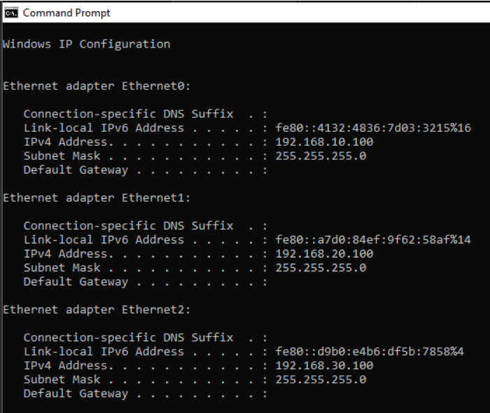
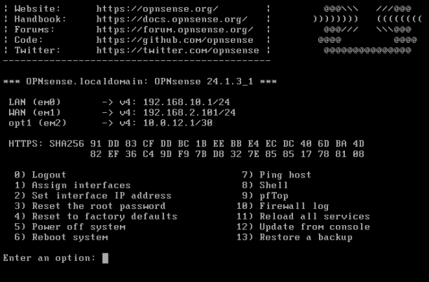

Project Detail
Border Gateway Protocol Virtual Lab
Summary
I built a segmented VMware lab, configured BGP across virtual routing infrastructure, and validated functionality with screenshots and a full demonstration recording.

Router Configuration